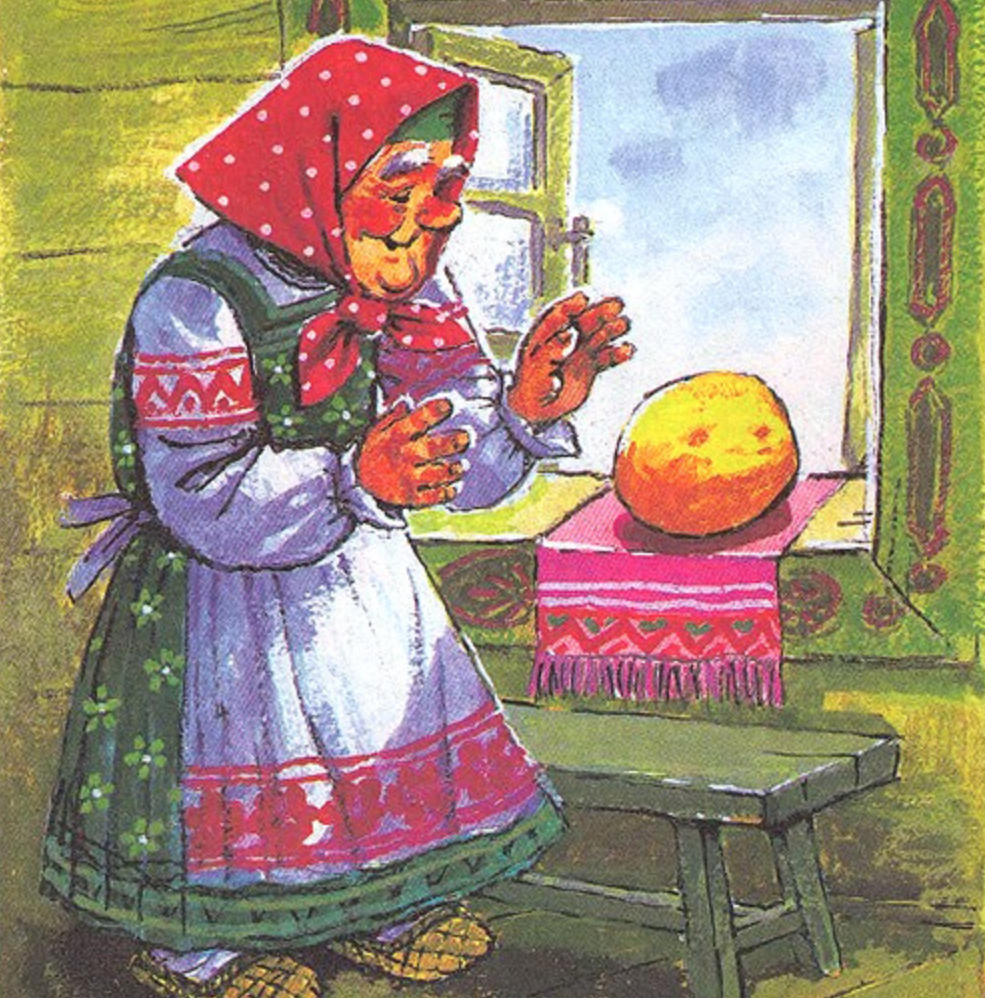

Жили собі дід та баба, та такі убогі, що нічого в них нема. От раз дожились вже до того, що не стало у них і хліба — й їсти нічого.
-
Дід і каже:
- Бабусю! Піди у хижку, назмітай у засіці борошенця та спечи мені колобок.
-
От баба так і зробила: витопила в печі, замісила яйцями борошно, що назмітала, спекла колобок і
поклала на вікні, щоб прохолов. А він з вікна — та на призьбу, а з призьби — та на землю, та й побіг
дорогою.
